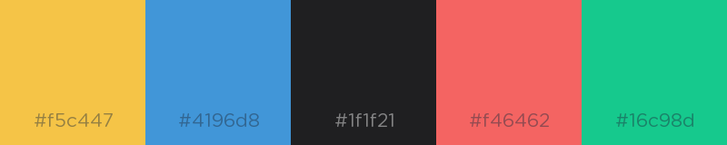

I
do a lot of front-end design work and development using the Brackets text editor. Where Brackets stands out from the rest of the editors out there lies in how it specifically supports and enhances web development languages and processes. I particularly love the live-preview aspect that lets me see the results of any changes that I make in real-time, making on-the-fly design changes easy to implement.
Because Brackets, similar to Atom, allows users to install extensions from its Extension Registry in the form of packages or themes, I decided to design a dark theme of my own.
This theme is written in Less syntax, and makes use of a colorful palette. I decided to pick colors that were varied yet slightly duller than normal. This combination allows distinct colors to represent various commonalities in programming languages for easy recognition, without being visually jarring to look at.
Designing this theme presents the opportunity to use some common enhancements in my CSS that the Less preprocessing syntax allows for, such as setting variables for reused code.
As of July 2017, this theme has 18,000+ downloads in the extension registry, making it one of the more popular themes available. You can download it by opening up Brackets, going to File > "Extension Manager...", switching to the Themes tab and searching for "Introversed".